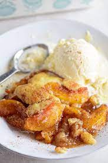

Georgian Peach Cobbler

Description:
I've been experimenting with cobbler for some time and this recipe is the final result. Loved by all. Use fresh
Georgia peaches, of course!
Ingredients:
- 8 fresh peaches - peeled, pitted and sliced into thin wedges
- ¼ cup white sugar
- ¼ cup brown sugar
- ¼ teaspoon ground cinnamon
- ⅛ teaspoon ground nutmeg
- 1 teaspoon fresh lemon juice
- 2 teaspoons cornstarch
- 1 cup all-purpose flour
- ¼ cup white sugar
- ¼ cup brown sugar
- 1 teaspoon baking powder
- ½ teaspoon salt
- 6 tablespoons unsalted butter, chilled and cut into small pieces
- ¼ cup boiling water
- 3 tablespoons white sugar
- 1 teaspoon ground cinnamon
Steps:
- Preheat oven to 425 degrees F (220 degrees C).
- In a large bowl, combine peaches, 1/4 cup white sugar, 1/4 cup brown sugar, 1/4 teaspoon cinnamon, nutmeg,
lemon juice, and cornstarch. Toss to coat evenly, and pour into a 2 quart baking dish. Bake in preheated
oven for 10 minutes.
- Meanwhile, in a large bowl, combine flour, 1/4 cup white sugar, 1/4 cup brown sugar, baking powder, and
salt. Blend in butter with your fingertips, or a pastry blender, until mixture resembles coarse meal. Stir
in water until just combined.
- Remove peaches from oven, and drop spoonfuls of topping over them. Sprinkle entire cobbler with the sugar
and cinnamon mixture. Bake until topping is golden, about 30 minutes.